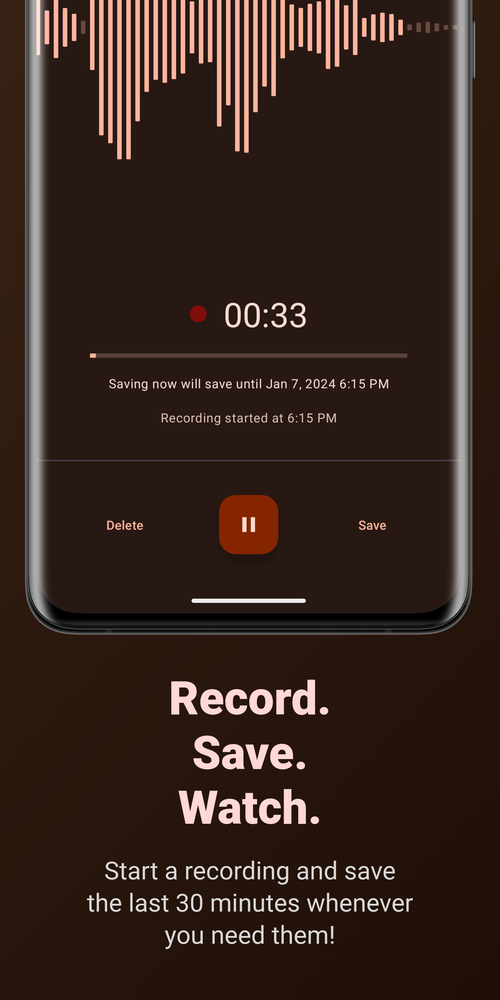
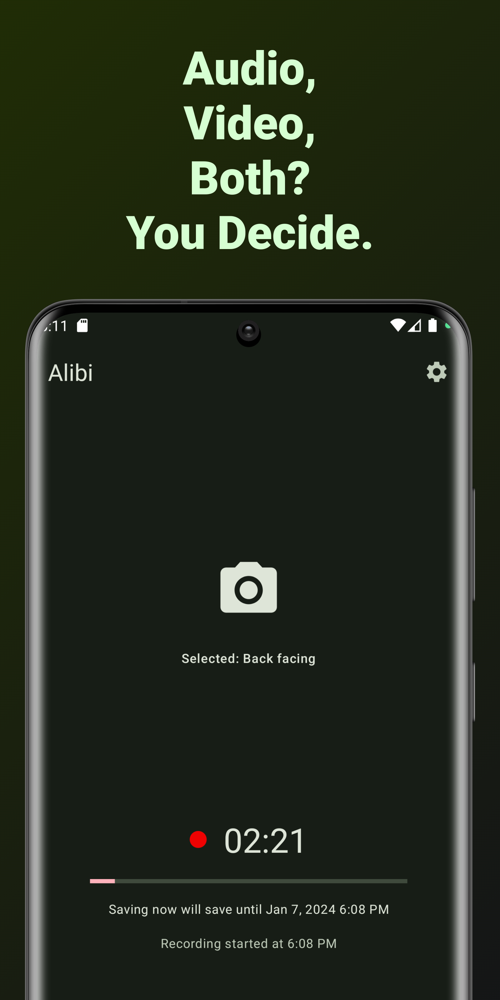

手机记录仪怎么挑？Alibi 和那些只做"表面功夫"的同类不一样
同为手机端滚动缓冲录制工具，Alibi 在无 Root 离线、音频优先架构和息屏续航上比同类竞品走得更远，本文从实际使用体验拆解它的差异化优势与适用边界。
手机记录仪怎么挑？Alibi 和那些只做"表面功夫"的同类不一样
手机当记录仪用这个赛道并不算新——从最早需要 Root 的刷机方案，到后来各种"一键录像"App，每隔一段时间就会冒出一两个"神器"。但真正能留下来长期跑的，我自己的体验里屈指可数。Alibi 是其中一个让我愿意单独写一篇的，因为它踩中了大多数同类工具没踩对的那个点：记录仪的核心需求从来不是"拍得好看"，而是"关键时刻拿得出证据"。
大多数同类工具要么把精力花在花哨的滤镜和剪辑上，要么卡在系统权限上过不去——Root、Shizuku、辅助功能，一套折腾下来普通用户早就放弃了。去Alibi官网看一眼就能明白，它的思路完全不同：从一开始就不追求"成为一个好相机 App"，而是一门心思做一个能可靠运行的滚动缓冲录音机，视频模式都是后来才加上的扩展。
它的真正差异化：三个同类做不到的事
1. 无 Root、全离线、不联网验证
这三个点分开看都不算稀奇，但凑在一起就很少见了。
我见过太多"号称免 Root"的方案，点开设置弹个"请授权 XX 权限"，一键跳转到开发者选项开 Shizuku，然后还得挂个网络验证防止"破解版"。Alibi 什么都不要——装上就能用，不需要账号，不需要联网，甚至连首次启动的欢迎页都是离线内置的。系统要求写得很清楚：Android 7.0 以上就行，四种 CPU 架构全覆盖；官方下载的安装包约 119 MiB。

这个"全离线"的设计在记录仪场景里不是"锦上添花"，而是功能刚需。想象一下：你在地下车库、隧道里、或者信号本来就差的郊区，记录仪却因为联网验证超时挂了——这种事在某些"大厂方案"的 App 上我真遇到过。Alibi 从架构上就规避了这个问题：录音和录像服务完全本地运行，网络只用来上传可选的匿名崩溃日志（默认关闭）。
2. 音频优先的双模架构
滚动缓冲这个概念大家都不陌生——先录着，出事了再保存前面的片段。但大多数同类工具是"视频优先"架构，音频只是附带的，关掉摄像头录音质量就掉一大截。
Alibi 反过来：它最早是一个纯录音 App，视频模式是 0.4.0 版本才加的。这个历史决定了它的音频栈是主力、是经过长期打磨的。实际体验下来有几个明显优势：
- 纯音频模式的续航表现：关掉相机模组后，一台 Android 10 的老手机挂一晚上（12 小时以上）录制，电量消耗不到 30%。对比之下，同类竞品开着视频录制同时间段，经常能把电池吃到 80% 以上。
- 音频参数的精细度：采样率、码率、麦克风选择、波形实时监测——这些在纯录音工具上才有的配置，Alibi 全套保留；具体参数怎么调可以去Alibi文档翻。场景化推荐也做得到位：值班对话 128~192 kbps 足够人声，口头约定要把启动点放在谈话开始前配合 15~30 分钟保存窗口，骑行夜归外接线控麦别在领口调灵敏度。
- 视频模式的音频同步：有些"视频优先"的 App 录音是事后叠加，音画偶尔会飘。Alibi 因为音频管线是核心，视频录制时音画同步是架构层面的事，不存在这个问题。
3. 前台服务的"明牌"伪装
Android 12 之后系统对后台录制的管制越来越严，很多同类工具的解决方案是"引导用户关闭通知"或者"用辅助功能绕过去"——前者等于自废后台能力，后者稳定性堪忧。
Alibi 的思路很讨巧：利用前台服务机制，但把那条"必须常驻"的通知变成了伪装道具。系统要求前台服务必须显示一条常驻通知防止"偷偷录音"，那好，这条通知我给你做成"天气应用""待办事项""下载管理器"的样子——用户知道它在录，但外人扫一眼通知栏完全不会起疑。

而且这个伪装是真有用的：我试过在办公场景挂着录音，同事走过来看通知栏完全没反应。同类工具要么没有这个功能，要么做得很粗糙（改个图标就完事了），Alibi 则提供了好几套预设，可以自定义标题、内容、小图标和时间显示，做得足够像。
它为这些优势付出了什么代价
说人话就是：Alibi 不是没有缺点，只是它主动选择了不去做某些事。
平台限制是最大的门槛。Android-only，没有 iOS 版本，也没有计划支持。这不是技术上做不到——iOS 也有音频 API，但 iOS 的后台录制限制比 Android 严得多，Apple 审核对"录音 App"一向很敏感。Alibi 团队选择把 Android 这条线做透，而不是分散精力去做一个功能残缺的 iOS 版。如果你主力机是 iPhone，这款只能 pass。
没有"高大上"的功能。不支持云同步、不支持跨设备联动、没有 OCR 文字识别、没有 AI 摘要、没有一键分享到社交平台。导出的就是原始音频/视频文件，文件名按时间戳自动生成，你自己拿去处理就行。对"把记录仪当成生产力工具"的用户来说可能不够用，但对"只要留证就行"的核心场景来说，这些功能全是冗余。
上手需要一点"记录仪思维"。它不是那种"打开 App 点录像按钮就完事"的工具——你需要理解滚动缓冲的逻辑（保存的是"往前倒推 N 分钟"而不是"从点击开始"），需要根据场景调画质参数，需要设置后台防杀白名单。对喜欢无脑用的用户来说，这个学习曲线可能劝退。
选购结论：谁该选它，谁该再看看
选 Alibi 如果你：
- 安卓主力机用户，主力需求是"关键时刻有证据"而不是"拍 Vlog"
- 在意离线能力和隐私，不想让第三方服务器接触你的录音录像
- 有旧手机（Android 7+）想利用起来做专职记录仪——它对老机型的优化做得确实好
- 需要在"不方便让别人知道正在录"的场景使用（值班沟通、口头约定、骑行夜归），伪装通知是刚需
再看看别的如果你：
- iPhone 主力机——直接跳过，没有 iOS 版
- 需要云备份、AI 处理、跨设备联动——那些"大厂方案"功能更全
- 想要"打开就录、啥都不管"的极简体验——Alibi 的参数配置需要花半小时摸清楚
- 录短视频为主、追求画质和剪辑——Alibi 的视频能力只是够用，不是强项
至于竞品，说实话大多数同类工具要么卡在系统权限上过不去，要么就是把精力放错了地方。Android 生态里真正能和 Alibi 在同一维度竞争的其实不多，大多数用户试过一圈之后还是会回到它这里。我自己的结论很明确：如果你的需求是"手机当记录仪用"，Alibi 是目前这个品类里最值得长期挂机的选择。
以上就是我对这款应用的使用体会。文档同步维护在GitHub、Gitee、GitCode三个平台，怕哪一边访问不了的可以换个镜像试试。